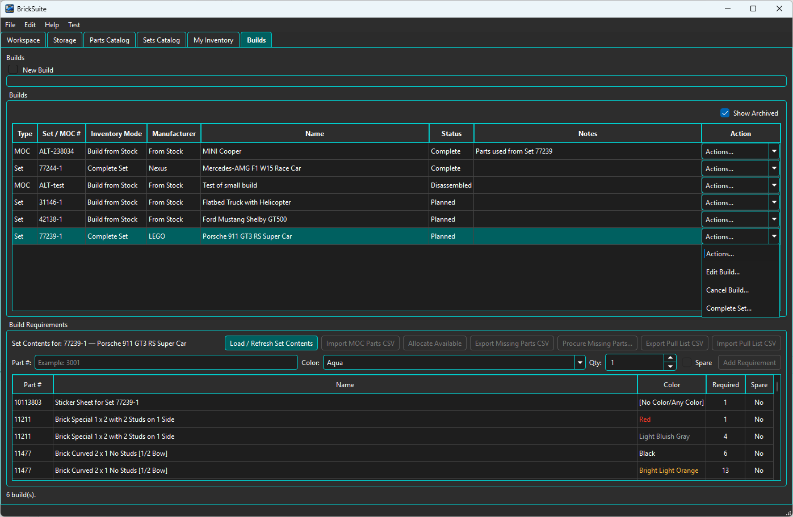
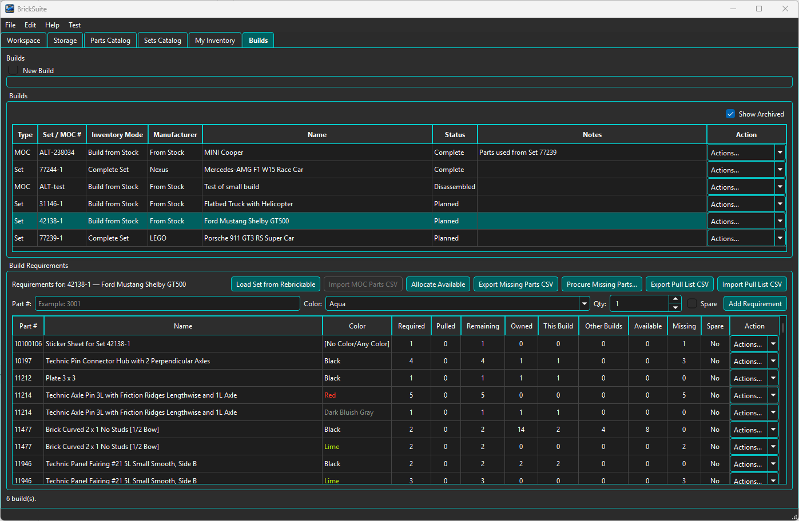
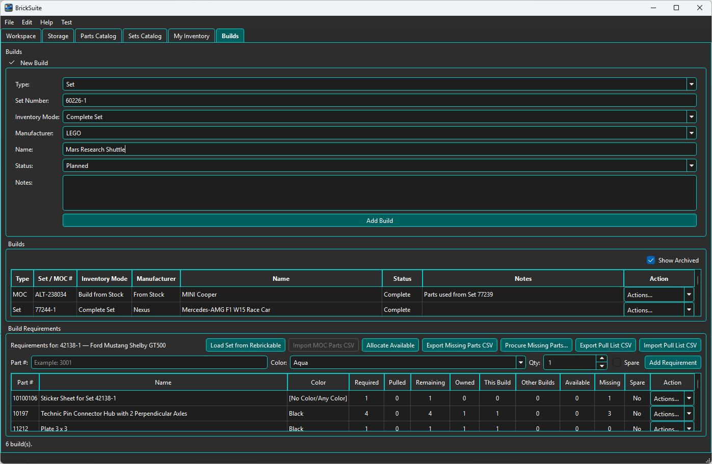
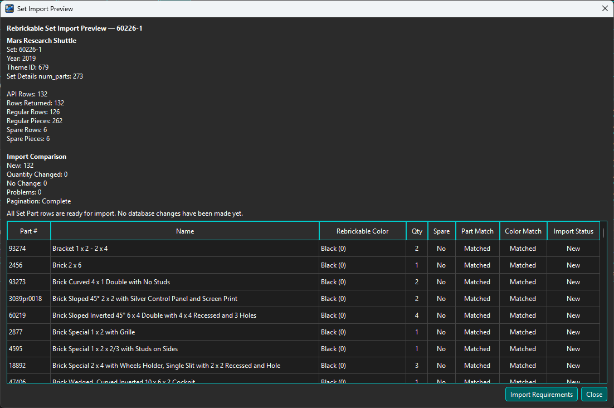
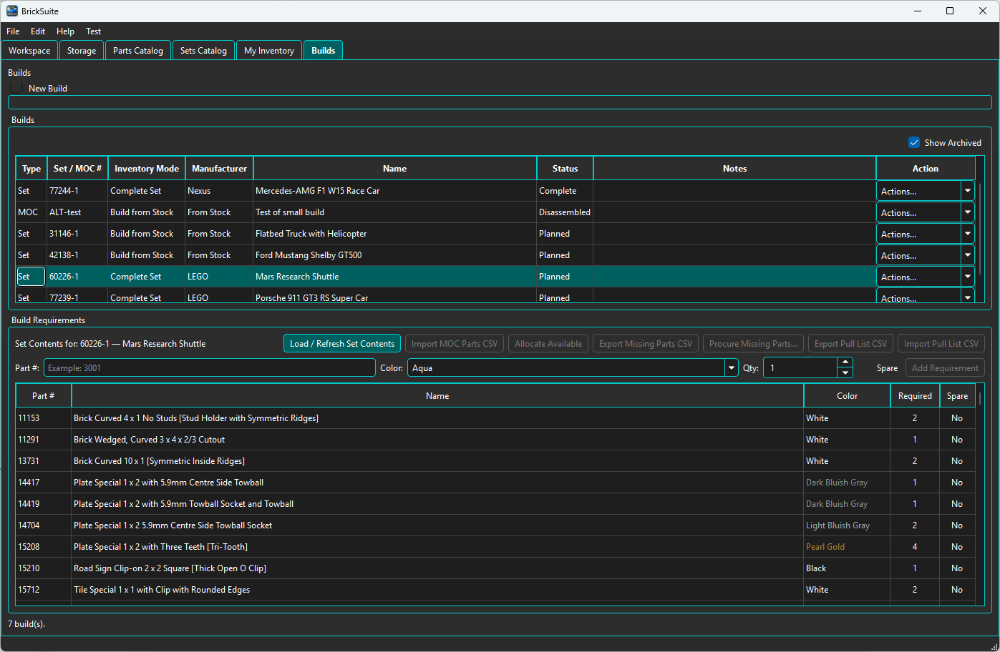
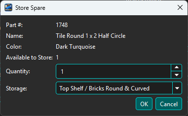
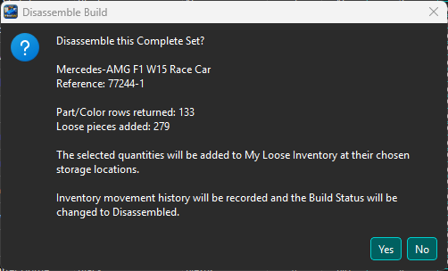

Builds represent Sets, MOCs, and catalog Minifigs that you want BrickSuite to track against your available inventory. A Build contains requirements, allocations, status, and the activity needed to move from planning through pulling, completion, cancellation, or disassembly.

The Builds tab shows your current Builds and provides filters for finding the project you want to work with. Each Build row includes its identity, type/status information, and an Actions... control for the workflows available in its current state.
BrickSuite keeps Build lifecycle changes in the database rather than deleting completed or inactive work. This preserves history and lets archived or cancelled Builds remain traceable.
Open a Build row's Actions... control to see the actions currently available for that Build.

The available actions depend on the Build type and current status. Typical actions include opening details, allocating available inventory, working with missing parts, importing or reconciling pull lists, changing lifecycle status, cancelling, archiving, or disassembling a completed Build.
Open Details to review the Build's requirements, allocations, shortages, and current state.

Build Details is the working view of the parts required for the project. It lets you compare what the Build needs with what BrickSuite knows is available in My Inventory.
When creating a new Build of Type: Set, BrickSuite supports a Mode: Complete Set workflow. This mode is designed for creating a Build from the complete part requirements of a known LEGO Set rather than starting with an empty requirement list.

Select the Set and choose Complete Set. BrickSuite retrieves the Set requirement data and prepares it for review before adding the requirements to the new Build.

The preview is a validation step. It shows the Set identity, returned part rows, regular and spare piece counts, matching information, and any problems detected while resolving the imported requirements.

After the import is accepted, BrickSuite populates the Build with the Set's requirements. You can then use the normal allocation, missing-parts, pull, and completion workflows against those requirements.
This workflow depends on current Set and part reference data. For first-time setup, see Quick Start.
A Complete Set can include spare pieces in addition to the regular pieces required to assemble the model. BrickSuite identifies those requirements with Spare = Yes. After the Complete Set is established, you can release an available spare from the Set so it can be used as loose inventory elsewhere in the workshop.

Open the spare requirement's Actions... control and choose Store Spare.... BrickSuite opens the Store Spare dialog for that specific part and color.

The dialog shows the quantity currently available to store. Choose the quantity and the destination Storage location, then choose OK. The released pieces are stored in My Loose Inventory at the selected location and become available for other inventory and Build workflows.
Use Allocate Available to let BrickSuite compare Build requirements with loose inventory and allocate quantities that are currently available.

The allocation process reduces repetitive manual work when many requirements can be satisfied from existing inventory. Review the resulting allocations before continuing with physical pulling.
See Allocate Available for the detailed workflow.
When requirements cannot be fully satisfied from available inventory, use the Missing Parts workflow to review the shortage.

Missing Parts can feed the procurement/export workflow so shortages can be prepared for external store or wanted-list use.
See Missing Parts for details.
BrickSuite can export and re-import pull-list information so the physical act of pulling parts from Storage can be reconciled with the Build requirements and inventory records.

After working from the exported list, import the resulting pull information back into BrickSuite.

The reconciliation workflow lets you review what was expected versus what was actually pulled.

After reconciliation, BrickSuite updates the Build/inventory state so the recorded result matches the physical pull activity.

When the required workflow is finished, move the Build to the appropriate completion state. BrickSuite preserves the Build record and its history rather than deleting it.

When a completed Complete Set is physically taken apart, use the Complete Set disassembly workflow to return its selected pieces to My Loose Inventory instead of manually recreating the inventory records.

The Disassemble Complete Set dialog lists each part/color row, manufacturer, Set quantity, whether the row is a spare, the quantity to return, and the destination Storage location. Choose a Default Destination and use Apply to All when the returned pieces should go to the same location, or choose destinations and returned quantities individually.
The Default Destination initially uses the last successful inventory destination remembered for this workspace during the current BrickSuite session when it is still valid. Per-row destinations remain unassigned until you choose them or explicitly use Apply to All. A successful single-destination disassembly updates the session default; mixed destinations do not.
The summary at the bottom reports the regular pieces, spare pieces, and total loose pieces that will be returned. At this stage BrickSuite explicitly reports that no inventory changes have been made yet, allowing you to review the disassembly before committing it.
Choose Disassemble Set when the quantities and destinations are correct. BrickSuite then shows a final confirmation.

The confirmation reports the number of part/color rows and loose pieces that will be returned. If you choose Yes, the selected quantities are added to My Loose Inventory at their chosen Storage locations, inventory movement history is recorded, and the Build status changes to Disassembled.
BrickSuite distinguishes between Builds that are completed, cancelled, archived, or disassembled. These lifecycle states preserve what happened without deleting the Build record.
Builds can represent LEGO Sets, MOCs, and Minifigs. Complete Set mode is specific to Set-based Build creation. MOC requirements normally come from their own parts-list/import workflow, while Minifig Builds snapshot the required pieces imported in the Minifigs Catalog.
See MOCs for the MOC-specific workflow.
Quick Start | Sets Catalog | MOCs | Allocate Available | Missing Parts | My Inventory
A completed, active Set, Minifig, or MOC Build can be deliberately added through Actions → Add to Collection. The Build remains the historical operational record, stays Complete, and no inventory or requirements are changed. Each Build can source only one Collection item; afterward the action becomes View Collection Item.
Set and Minifig Builds require their authoritative catalog linkage. BrickSuite does not guess catalog identity from a displayed reference. A MOC uses its Build as its authoritative source. Collection state and future disassembly synchronization are handled separately.